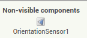

No te desorientes
Objetivos
- Crear una brújula en nuestro dispositivo para no perdernos cuando caminemos por lo más profundo del bosque de Fangorn.
Usaremos el componente "OrientationSensor" pero no te preocupes si no funciona bien... no todos tenemos un móvil con este sensor.
Actividad
Abre AppInventor. Crea un nuevo proyecto llamado "brujula".
Descárgate estas dos imagenes para usarlas en nuestra app.
{kind=link}
{kind=link}
Lo primero es que la pantalla de nuestro móvil no gire por lo que ponemos la propiedad "ScreenOrientation" de "Screen1" a Portrait.
Vamos a crear la interfaz. Introduce un "TableArrangement" Con las etiquetas necesarias para dar la información de Azimut, Pitch y Roll.
La forma más sencilla para comprender qué indican estas tres características es ver esta imagen:
Configuramos la interfaz con estas etiquetas (renombradas adecuadamente):
Ahora pondremos un "Canvas" con estas características:
- BackgroundColor: None
- BackgroundImage: circunferencia.png (tendrás que subir la imagen que has descargado antes)
Ahora arrastramos un componente "ImageSprite" dentro del "Canvas1", lo renombramos como "NeedlesImage" y le ponemos estas características:
- Picture: brujula.png (tendrás que subir la imagen que has descargado antes)
- Rotates: True
- X: 0
- Y: 0
Por último, añadimos un "OrientationSensor" de la categoría "Sensors", es un componente no visible:

El parámetro que realmente nos interesará para mover nuestra brújula será "azimuth" de "OrientationSensor1", que indicará la desviación en grados de nuestro dispositivo respecto al polo norte. De todas formas vamos a mostrar todos los valores y así veremos si funciona el sensor de orientación. Roll y Pitch son grados de inclinación del móvil (hacia los lados o hacia delante o detrás).
Vamos a programar a la sección de "Blocks". Lo primero será comprobar si realmente nuestro dispositivo tiene un sensor de orientación:
Y después que cuando el sensor note un cambio de orientación, muestre los valores correspondientes y mueva la imagen de la brújula:
¿Lo probamos? Ahora ya puedes perderte por la montaña, siempre y cuando lleves tu móvil con esta aplicación instalada.
Obra publicada con Licencia Creative Commons Reconocimiento No comercial Compartir igual 3.0

Programando en AppInventor por Francisco Nevado Montero se distribuye bajo una Licencia Creative Commons Atribución-NoComercial-CompartirIgual 4.0 Internacional.